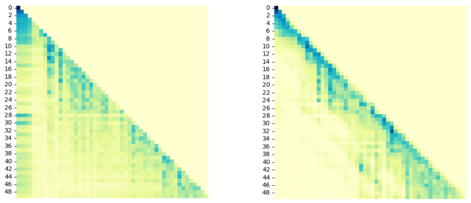
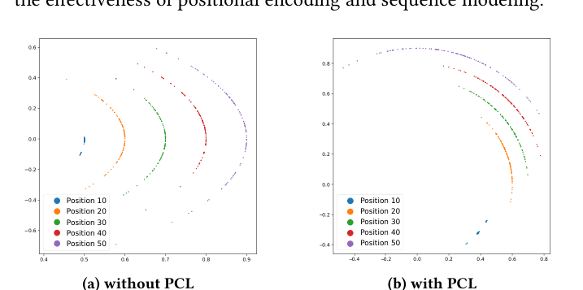

EulerFormer: Sequential User Behavior Modeling with Complex Vector Attention (基于复向量注意力的序列用户行为建模)
- 会议/期刊: SIGIR 2024
- 作者与机构: Zhen Tian, Wayne Xin Zhao, Ji-Rong Wen 等（中国人民大学高瓴人工智能学院 & 华为泊松实验室）
- 推荐链路定位: 召回 / 精排（作为 Transformer 序列编码器骨干，替换位置编码与注意力算子）
- 研究方向: 序列与会话推荐 / 自监督对比学习
- 论文原文: https://arxiv.org/abs/2403.17729v2
- 开源代码: https://github.com/RUCAIBox/EulerFormer
TL;DR (1分钟核心速览)
序列推荐的主流 Transformer 依赖位置编码，而 RoPE 类方法把语义差用点积建模、位置差用旋转角建模，两套数学形式割裂，且当用户兴趣语义差异剧烈（如查询与键方向相反）时 RoPE 会彻底丧失位置建模能力。本文提出 EulerFormer：用欧拉公式把 token 映射为极坐标复向量，使语义差与位置差统一为同一旋转形式 \(\exp[i(\Delta\boldsymbol{S}+\Delta\boldsymbol{P})]\)，再用可学习的自适应缩放/偏置对齐两者尺度，并以相位对比学习提升表征各向同性。在 ML-1M / Yelp2022 / Amazon_Books / ML-20M 四个数据集、Leave-One-Out 全库排序协议下，SASRec+EulerFormer 的 NDCG@10 分别提升 10.46% / 8.30% / 5.19% / 2.61%，延迟仅 2.14s，低于 RoPE 的 2.47s。
Background & Motivation (背景与核心矛盾)
- 主流范式: 以 SASRec/BERT4Rec 为代表的 Transformer 序列推荐，普遍使用可学习绝对位置嵌入 \(\boldsymbol{X}=\boldsymbol{P}+\boldsymbol{E}\)；NLP 侧则流行 RoPE 这类旋转式相对位置编码。
- 前人局限一: 绝对位置嵌入只能覆盖训练中观测到的位置，无法外推到更长序列，且天然刻画不了 item 间的相对距离依赖。
- 前人局限二: RoPE 的核心式 \(\mathrm{Re}[\boldsymbol{q}_m^\top\boldsymbol{k}_n^*\exp(i(m-n)\alpha)]\)中，语义部分走点积、位置部分走旋转角，两种度量的数学性质并不一致；用户行为序列比自然语言更自由，语义差\(\Delta\boldsymbol{S}\)在不同层/不同用户间波动极大，而\(\Delta\boldsymbol{P}\) 是预定死的，两者量级极易失配。
- 核心洞察 (Key Insight): 若能把语义差也表达为相位角差，则 \(\Delta\boldsymbol{S}\)与\(\Delta\boldsymbol{P}\) 就落在同一个加法旋转群内，可统一建模、可自适应调权，并能显式控制长程衰减梯度。
- 本文切入点: 用欧拉变换 \(\mathcal{F}\) 把实向量拆成实/虚两半转成极坐标复向量，从而将点积重写为旋转；再引入层内可学习仿射变换调制语义相位。
Method (核心方法设计)
1. 整体框架 (Overall Architecture)
输入序列先做常规 item 嵌入 + 可学习绝对位置嵌入，得到 \(\boldsymbol{x}_j\in\mathbb{R}^d\)；随后在每层注意力的 Query/Key 分支上执行：拆分 → 欧拉变换（实部/虚部 → 模长\(\boldsymbol{\lambda}\)与相位\(\boldsymbol{\theta}\)）→ 叠加绝对旋转嵌入\(\boldsymbol{\psi}_j\)与相对旋转量\((m-n)\boldsymbol{g}\)→ 语义相位经 adaptation 仿射调制 → 逆变换\(\mathcal{F}^{-1}\)回实数域 → 标准缩放点积注意力。由于\(\mathcal{F}\)可逆且保内积，整个过程无需任何复数乘法，仅\(O(Nd)\) 线性开销，可直接插入现有 Transformer 层。训练时叠加下一物品交叉熵与相位对比损失。
flowchart TD
A["交互序列 v_1..v_N + 绝对位置嵌入"] --> B["Q/K 投影后拆分实部/虚部"]
B --> C["欧拉变换 F: 得到模长 λ 与相位 θ"]
C --> D["叠加旋转: 绝对 ψ_j + 相对 (m-n)g"]
D --> E["自适应调制 θ~ = δ⊙θ + b"]
E --> F["逆变换 F⁻¹ 回实数域"]
F --> G["缩放点积注意力 + Softmax"]
G --> H["下一物品预测 / 相位对比损失"]2. 关键设计拆解 (Key Designs)
- 欧拉变换与统一旋转形式：把 \(\boldsymbol{x}_j\)前后半维当作实部\(\boldsymbol{r}_j\)、虚部\(\boldsymbol{s}_j\)，得\(\tilde{\boldsymbol{x}}_j=\mathcal{F}(\boldsymbol{x}_j)=\boldsymbol{\lambda}_j\exp(i\boldsymbol{\theta}_j)\)，其中\(\boldsymbol{\lambda}_j=\sqrt{\boldsymbol{r}_j^2+\boldsymbol{s}_j^2}\)、\(\boldsymbol{\theta}_j=\mathrm{atan2}(\boldsymbol{s}_j,\boldsymbol{r}_j)\)。关键性质是点积被重写为模长调制 + 角度差：
直觉上，语义相似度不再是"长度"，而是"朝向"，于是语义与位置可以在同一复平面上做角度加和，RoPE 只是 \(\boldsymbol{\delta}=1,\boldsymbol{b}=0\) 的特例。
- 差分旋转中的自适应调制 (Adaptive Rotation)：痛点在于 \(\Delta\boldsymbol{S}\)的分布跨层剧烈漂移，而\(\Delta\boldsymbol{P}\)固定，直接相加会使相位被语义噪声淹没。作者对 Query 相位做层内仿射\(\tilde{\boldsymbol{\theta}}^Q_j=\boldsymbol{\delta}_l\odot\boldsymbol{\theta}^Q_j+\boldsymbol{b}_l\)（Key 只缩放不偏置，保持相对性），得到\(\mathrm{Re}[\cdot]=\big(\boldsymbol{\lambda}^Q_m\odot\boldsymbol{\lambda}^K_n\big)^\top\mathrm{Re}\big[\exp(i(\boldsymbol{\delta}_l\odot\Delta\boldsymbol{S}+\boldsymbol{b}_l+\Delta\boldsymbol{P}))\big]\)。由于梯度\(\partial(\boldsymbol{q}_m^\top\boldsymbol{k}_n)/\partial D=-(\boldsymbol{\lambda}^Q_m\odot\boldsymbol{\lambda}^K_n\odot\boldsymbol{g})^\top\sin(\boldsymbol{\delta}\odot\Delta\boldsymbol{S}+\boldsymbol{b}+D\boldsymbol{g})\)中的相位可被\(\boldsymbol{\delta},\boldsymbol{b}\)拉回，模型可主动维持"距离越远注意力越小"的长程衰减性质——这正是 RoPE 在\(\Delta\boldsymbol{S}+\Delta\boldsymbol{P}\in[\pi+2k\pi,(2k+2)\pi]\) 时会出现注意力随距离递增的失效区间。

- 相位对比学习与总损失：Transformer 表征常呈各向异性（推荐场景 item 数量巨大更严重），导致 \(\Delta\boldsymbol{S}\to 0\)、与位置差融合失效。作者只对相位做随机掩码增广，构造\(\mathcal{L}_{query}=-\frac{1}{B}\sum_{\tilde{\Theta}}\sum_{j=1}^{N}\log\frac{\exp(\boldsymbol{w}^\top\cos(\tilde{\boldsymbol{\theta}}^Q_j-\bar{\boldsymbol{\theta}}^Q_j)/\tau)}{\sum_{j'=1}^{N}\exp(\boldsymbol{w}^\top\cos(\tilde{\boldsymbol{\theta}}^Q_j-\bar{\boldsymbol{\theta}}^Q_{j'})/\tau)}\)，并对 Key 同构地加一项，\(\mathcal{L}_{Con}=\mathcal{L}_{query}+\mathcal{L}_{key}\)。总目标\(\mathcal{L}=\mathcal{L}_{CE}+\epsilon\cdot\mathcal{L}_{Con}\)，\(\mathcal{L}_{CE}\)为全库 softmax 交叉熵；不使用额外负采样（同序列内 token 互为负例），\(\epsilon\)搜索于\(\{10^{-4},10^{-5},10^{-6}\}\)，\(\tau\)搜索于\(\{0.5,1,5,10\}\)。由于模长与相位解耦，该任务只调整朝向、不破坏模长语义。

Experimental Setup & Evaluation Protocol (实验设置与评估协议)
| 数据集 | #Users | #Items | #Interactions | 稀疏度 | 平均序列长 |
|---|---|---|---|---|---|
| ML-1M | 6,034 | 3,124 | 834,449 | 95.57% | 138.31 |
| Yelp2022 | 9,370 | 24,627 | 811,573 | 99.65% | 86.62 |
| Amazon_Books | 543,598 | 276,863 | 15,035,247 | 99.99% | 27.66 |
| ML-20M | 137,524 | 14,259 | 16,447,894 | 99.16% | 119.60 |
- 数据划分与防穿越:
Leave-One-Out（最后一交互为测试、倒数第二为验证、其余训练），严格按时间戳顺序构造序列。 - 排名评测协议: 测试阶段将真实物品与全部未交互物品一起排序（无偏 Full-Ranking），报告 Recall@10 / MRR / NDCG@10 并按用户平均；无负采样排序，训练侧亦为全库 softmax 而非 BPR 采样。
- 对比基线与超参: 插入式骨干基线 SASRec、BERT4Rec、CORE、SASRecF、FDSA；位置编码基线 Sinusoidal、XLNet 相对嵌入、T5 bias、ALiBi、RoPE。统一 \(d=64\)、层数\(L=2\)、头数\(h=2\)、FFN 256，Adam 优化，基于 RecBole 实现；主表用 paired\(t\)-test 标注\(p<0.01\) 显著性。
Key Experimental Results (实验关键数据)
1. 主实验对比 (Main Results)
以 SASRec 为统一骨干，替换不同位置编码方案（表 4 摘录）：
| 方法 | ML-1M R@10 | ML-1M MRR | ML-1M NDCG@10 | Yelp NDCG@10 | Amazon NDCG@10 | ML-20M NDCG@10 | 延迟(ML-1M) |
|---|---|---|---|---|---|---|---|
| Base (可学习绝对PE) | 23.70 | 8.88 | 12.33 | 2.65 | 7.13 | 11.13 | 1.85s |
| Sinusoidal | 23.54 | 8.94 | 12.34 | 2.28 | 6.87 | 10.72 | 1.94s |
| XLNet (相对PE) | 23.50 | 8.88 | 12.28 | 2.71 | 7.11 | 10.84 | 5.12s |
| T5 bias | 23.39 | 8.66 | 12.09 | 2.77 | 7.08 | 10.90 | 1.81s |
| ALiBi | 23.26 | 8.67 | 12.05 | 2.73 | 7.13 | 10.79 | 1.96s |
| RoPE | 23.85 | 8.91 | 12.39 | 2.81 | 7.17 | 10.90 | 2.47s |
| EulerFormer | 25.31 | 10.07 | 13.62 | 2.87 | 7.50 | 11.42 | 2.14s |
| Improv. vs Base | +6.79% | +13.40% | +10.46% | +8.30% | +5.19% | +2.61% | — |
插入到其他骨干（表 3）：EulerFormer+BERT4Rec 在 ML-1M 取得全局最优（R@10 28.11 / NDCG 15.42）；EulerFormer+CORE 在稀疏集上增益最猛（Amazon_Books R@10 +9.79%、MRR +13.24%，Yelp2022 NDCG +5.71%）；SASRecF/FDSA 增益较小（+0.44%~1.42%），作者归因于物品特征进一步加剧表征各向异性、削弱模型对位置的敏感度。
2. 消融实验 (Ablation Study)
| 变体 | ML-1M R@10 | ML-1M MRR | ML-1M NDCG@10 | Yelp R@10 | Yelp NDCG@10 |
|---|---|---|---|---|---|
| (0) EulerFormer 完整版 | 25.31 | 10.07 | 13.62 | 5.52 | 2.87 |
| (1) w/o adaptation function | 24.61 | 9.60 | 13.11 | 5.37 | 2.76 |
| (2) w 可学习位置编码（替代固定 \(\boldsymbol{g}\)） | 23.79 | 8.93 | 12.39 | 5.23 | 2.72 |
| (3) w/o differential rotation | 24.68 | 9.42 | 12.96 | 5.41 | 2.67 |
| (4) w/o rotary embedding | 24.76 | 9.57 | 13.11 | 5.37 | 2.74 |
| (5) w/o phase-contrastive learning | 24.76 | 9.44 | 13.02 | 5.31 | 2.78 |
3. 关键实验发现 (Key Findings)
- 自适应调制是最大增益源，但"把位置基频设为可学习"是灾难：去掉 adaptation 后 ML-1M NDCG 掉 0.51（13.62→13.11），而变体 (2) 直接把 \(\boldsymbol{g}\) 交给学习反而跌到 12.39，甚至不如原始 SASRec 的 12.33——说明本文的价值在于"调语义相位、锁位置相位"，颠倒了就同时破坏外推性与长程衰减。
- 序列越长收益越大：按序列长度分桶后，ML-1M 在 \([200,250)\)桶、Yelp2022 在\([90,100)\) 桶的相对提升最大（图 2），与注意力热力图显示"EulerFormer 把权重集中到近期物品、RoPE/SASRec 注意力弥散"的现象互相印证。
- 效率与精度并非权衡：EulerFormer 在 ML-1M 上延迟 2.14s，优于 RoPE 的 2.47s 与 XLNet 的 5.12s，仅比最简 Base 多 0.29s；线性 \(O(Nd)\) 复杂度、无矩阵乘法与复数内积，使其实测推理成本与 Sinusoidal 相当，而 NDCG 高出 10.4%。
Highlights & Limitations (亮点、对比与审稿批判)
- 与代表作对比: 相较 RoPE（\(\boldsymbol{\delta}=1,\boldsymbol{b}=0\)的特例），EulerFormer 把"预定死的相对位置"变成"层内可调的旋转对齐"；相较 ALiBi/T5 bias 用注意力偏置硬加位置惩罚，本文是在复平面内做角度融合，不额外引入\(O(N^2)\)偏置矩阵；相较 XLNet 的相对嵌入需改注意力打分并带来 2.8 倍延迟，本文保持\(O(Nd)\) 且精度全面领先。
- 可迁移亮点: (i) "只对相位做掩码对比、保留模长"的解耦式自监督目标，可低成本移植到任意 RoPE 系 LLM4Rec 的序列编码器中；(ii) 用 \(\boldsymbol{\delta},\boldsymbol{b}\) 显式控制长程衰减梯度符号的技巧，可推广到需要"局部性可控"的序列/时序建模。
- 审稿级局限批判: (i) 数据集 \(d=64\)、\(L=2\)的轻量配置下验证充分，但未给出工业级千万 item、\(d=256\)的扩展实验，\(\boldsymbol{\delta}\)与\(\boldsymbol{b}\)的层数相关参数量增长与收敛稳定性存疑；(ii) 相位对比损失对\(\epsilon\)（最优约\(10^{-5}\)）与\(\tau\)（0.8~1.2）较敏感，且稀疏集需更低温度，实际部署需逐数据集调参；(iii) 仅验证 next-item 预测这一下游任务，未检验长序列外推（train-short/test-long）与跨域迁移能力。
Rating (四维评分)
- 方法创新性 (Novelty): ⭐⭐⭐⭐⭐ （把语义差与位置差统一进同一复旋转群，并给出 RoPE 为特例的完整理论框架与长程衰减梯度分析，属真正的算子级创新）
- 评估协议与实验扎实度 (Protocol & Experiments): ⭐⭐⭐⭐ （四数据集 + Leave-One-Out + Full-Ranking + 显著性检验 + 位置编码/骨干双维度对比齐备，略欠大规模工业验证与长序列外推实验）
- 写作与数学规范度 (Clarity & Rigor): ⭐⭐⭐⭐⭐ （欧拉变换、差分旋转、梯度推导与复杂度分析环环相扣，\(\mathcal{F}\) 可逆保内积的论证尤其干净）
- 工业落地与复现价值 (Industrial & Practical Value): ⭐⭐⭐⭐⭐ （开源完整、基于 RecBole 可直接替换注意力层，线性复杂度且实测延迟低于 RoPE，工程落地门槛极低）